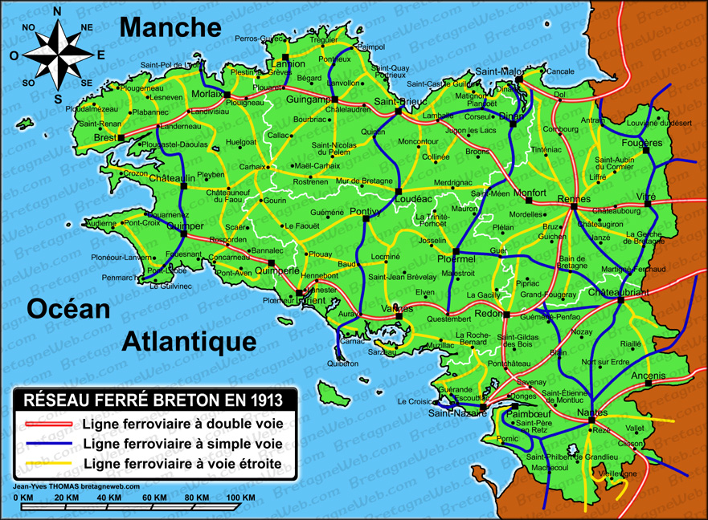
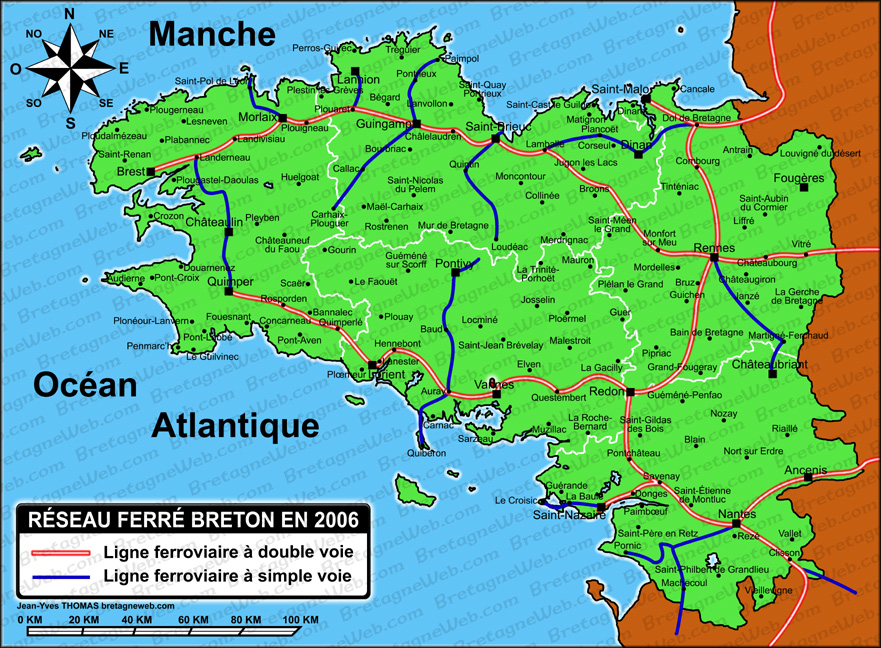

ACCUEIL
LES TER
HISTOIRE
CARTES
PLUS D'INFORMATIONS
Les Cartes du reseau ferré
Carte intéractive du réseau actuel
Le réseau ferré Breton en 1913

Le réseau ferré Breton en 2006

Atlas du réseau ferré Francais